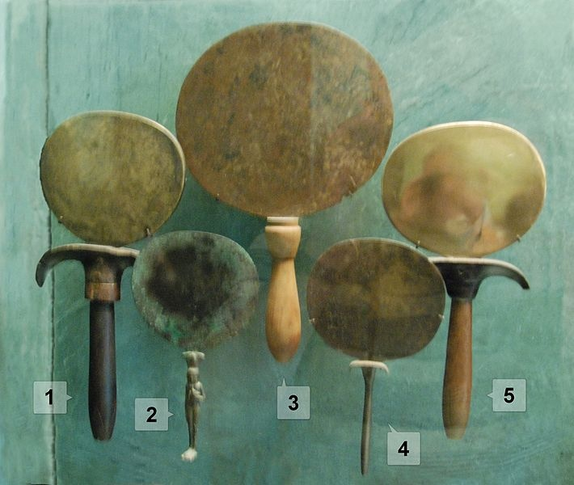
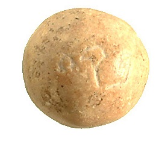

| 讀 | 默想 |
|---|---|
| 1 他用皂莢木做燔祭壇，是四方的，長五肘，寬五肘，高三肘， 2 在壇的四拐角上做四個角，與壇接連一塊，用銅把壇包裹。 3 他做壇上的盆、鏟子、盤子、肉鍤子、火鼎；這一切器具都是用銅做的。 4 又為壇做一個銅網，安在壇四面的圍腰板以下，從下達到壇的半腰。 5 為銅網的四角鑄四個環子，作為穿槓的用處。 6 用皂莢木做槓，用銅包裹， 7 把槓穿在壇兩旁的環子內，用以抬壇，並用板做壇；壇是空的。 |
27:1 「你要用皂莢木做壇。這壇要四方的，長五肘，寬五肘，高三肘。 2 要在壇的四拐角上做四個角，與壇接連一塊，用銅把壇包裹。 3 要做盆，收去壇上的灰，又做鏟子、盤子、肉鍤子、火鼎；壇上一切的器具都用銅做。 4 要為壇做一個銅網，在網的四角上做四個銅環，5 把網安在壇四面的圍腰板以下，使網從下達到壇的半腰。 6 又要用皂莢木為壇做槓，用銅包裹。 7 這槓要穿在壇兩旁的環子內，用以抬壇。 8 要用板做壇，壇是空的，都照著在山上指示你的樣式做。」 1-7節記錄了建造燔祭壇的過程，完全遵照二十七1-8節神在山上的指示。 |
| 8 他用銅做洗濯盆和盆座， 是用會幕門前伺候的婦人之鏡子做的。  上圖：古埃及的各種銅鏡，現藏于盧浮宮。古代以銅為鏡，銅磨亮之後可以照見人面，羅馬時代才開始用玻璃作鏡子。 |
30:18 「你要用銅做洗濯盆和盆座，以便洗濯。要將盆放在會幕和壇的中間，在盆裡盛水。 建造洗濯盆和盆座的過程，完全遵照三十18節神在山上的指示，但省略了三十18b，因為那些指示在支搭帳幕時才需要。建造洗濯盆和盆座的順序和建造香壇一樣，也與在神啟示裡的順序不同。 「洗濯盆和盆座」是「用會幕前伺候的婦人之鏡子做的」，正表達了「洗濯盆」的功用：事奉的人應當每天在神的話語面前省察自己、對付自己、潔淨自己。 這些姊妹被神救贖和赦免的恩典所感召，所以愛神勝過愛自己，不再注意天然的美容，不再「以外面的辮頭髮、戴金飾、穿美衣為妝飾」，而是「以裡面存著長久溫柔、安靜的心為妝飾，這在神面前是極寶貴的」（彼前三3-4）。 「會幕前伺候的婦人」，可能負責清潔、歌唱。 |
| 9 他做帳幕的院子。院子的南面用撚的細麻做帷子，寬一百肘。 10 帷子的柱子二十根，帶卯的銅座二十個；柱子上的鉤子和杆子都是用銀子做的。 11 北面也有帷子，寬一百肘。帷子的柱子二十根，帶卯的銅座二十個；柱子上的鉤子和杆子都是用銀子做的。 12 院子的西面有帷子，寬五十肘。帷子的柱子十根，帶卯的座十個；柱子的鉤子和杆子都是用銀子做的。 13 院子的東面，寬五十肘。 14-15門這邊的帷子十五肘，那邊也是一樣。 帷子的柱子三根，帶卯的座三個。 在門的左右各有帷子十五肘， 帷子的柱子三根，帶卯的座三個。 16 院子四面的帷子都是用撚的細麻做的。 17 柱子帶卯的座是銅的，柱子上的鉤子和杆子是銀的，柱頂是用銀子包的。院子一切的柱子都是用銀杆連絡的。 18 院子的門簾是以繡花的手工，用藍色、紫色、朱紅色線，和撚的細麻織的，寬二十肘，高五肘，與院子的帷子相配。 19 帷子的柱子四根，帶卯的銅座四個；柱子上的鉤子和杆子是銀的；柱頂是用銀子包的。 20 帳幕一切的橛子和院子四圍的橛子都是銅的。 |
27:9 「你要做帳幕的院子。院子的南面要用撚的細麻做帷子，長一百肘。 10 帷子的柱子要二十根，帶卯的銅座二十個。柱子上的鉤子和杆子都要用銀子做。 11 北面也當有帷子，長一百肘，帷子的柱子二十根，帶卯的銅座二十個。柱子上的鉤子和杆子都要用銀子做。 12 院子的西面當有帷子，寬五十肘，帷子的柱子十根，帶卯的座十個。 13 院子的東面要寬五十肘。 14 門這邊的帷子要十五肘， 帷子的柱子三根，帶卯的座三個。 15 門那邊的帷子也要十五肘， 帷子的柱子三根，帶卯的座三個。 16 院子的門當有簾子，長二十肘，要拿藍色、紫色、朱紅色線，和撚的細麻，用繡花的手工織成，柱子四根，帶卯的座四個。 17 院子四圍一切的柱子都要用銀杆連絡，柱子上的鉤子要用銀做，帶卯的座要用銅做。 18 院子要長一百肘，寬五十肘，高五肘，帷子要用撚的細麻做，帶卯的座要用銅做。 19 帳幕各樣用處的器具，並帳幕一切的橛子，和院子裡一切的橛子，都要用銅做。」 9-20節記錄了建造帳幕的院子的過程，完全遵照二十七9-19節神在山上的指示。而描述細節順序有所不同，可見不是完全照抄。 |
| 親愛的天父上帝，我感謝讚美祢。今天的經文記載了銅祭壇、洗濯盆、院子的院帷的製造情況。特別強調了製作洗濯盆所用的銅，是用會幕門前伺候的婦人的銅鏡子做的。從這裡看出來，當時候也有許多姊妹一起參與會幕的建造工作。感謝祢在今日的教會中，也呼召了許多姊妹們一同來服事。（今天的禱告，請為你的教會、小組中的姊妹感謝與代禱），奉耶穌基督的名禱告，阿們。 | |
| 21 這是法櫃的帳幕中利未人所用物件的總數，是照摩西的吩咐，經祭司亞倫的兒子以他瑪的手數點的。 22 凡耶和華所吩咐摩西的都是猶大支派戶珥的孫子、烏利的兒子比撒列做的。 23 與他同工的有但支派中亞希撒抹的兒子亞何利亞伯；他是雕刻匠，又是巧匠，又能用藍色、紫色、朱紅色線，和細麻繡花。 24 為聖所一切工作使用所獻的金子，按聖所的平，有二十九他連得並七百三十舍客勒。 25 會中被數的人所出的銀子，按聖所的平，有一百他連得並一千七百七十五舍客勒。 26 凡過去歸那些被數之人的，從二十歲以外，有六十萬零三千五百五十人。按聖所的平，每人出銀半舍客勒，就是一比加。 |
按每舍客勒11.4克、每他連得3000舍客勒計算，百姓總共奉獻了大約1000公斤的金子、3440公斤的銀子。二十歲以上平均每人奉獻了1.66克金子，5.7克銀子。 這「一百他連得並一千七百七十五舍客勒」（25節）的銀子是「贖罪銀」（參見三十11-16注解），並不包括自願奉獻的禮物（三十五5）。 按25-26節換算，當時每「他連得」有3000「舍客勒」。根據以色列出土的「比加」砝碼石，「一比加」大約是5.7克。  上圖：刻有「比加」字樣的砝碼石。以色列出土了好幾個主前8-7世紀的「比加」砝碼，重量在5.7-6.1克之間。「比加」是最小的砝碼石，表明以色列男人每人交「一比加」贖罪銀，是最小的數目。 |
| 27 用那一百他連得銀子鑄造聖所帶卯的座和幔子柱子帶卯的座；一百他連得共一百帶卯的座，每帶卯的座用一他連得。 28 用那一千七百七十五舍客勒銀子做柱子上的鉤子，包裹柱頂並柱子上的杆子。 |
這裡沒有敘述金子的用途，反而詳細說明了「贖罪銀」的用途，表明這些「帶卯的座」、「柱子上的鉤子」、「柱子」都與救贖有關。整個帳幕的根基就是這些「贖罪銀」，正如基督寶血所成就的救贖是教會的根基。只有真正經歷救恩的人，才真正在基督的身體裡面。 神數點了祂百姓的人數，所以「恰好」用「一百他連得並一千七百七十五舍客勒」（25節）的「贖罪銀」建造了會幕。 |
| 29 所獻的銅有七十他連得並二千四百舍客勒。 30 用這銅做會幕門帶卯的座和銅壇，並壇上的銅網和壇的一切器具， 31 並院子四圍帶卯的座和院門帶卯的座，與帳幕一切的橛子和院子四圍所有的橛子。 |
在聖經裡，銅象徵神公義的審判，銀象徵救贖。百姓總共奉獻了大約2421公斤的銅，在會幕裡分佈得最廣，但重量只有銀子的70%。神救贖的恩典大過公義審判的怒氣。表明神公義的追討是重的，但神救贖的恩典更重。「耶和華，耶和華，是有憐憫有恩典的神，不輕易發怒，並有豐盛的慈愛和誠實，為千萬人存留慈愛，赦免罪孽、過犯，和罪惡，萬不以有罪的為無罪，必追討他的罪，自父及子，直到三、四代」（三十四6-7）。 |
| 親愛的天父上帝，祢是建造會幕的主，祢讓會幕聖所有帶卯的座，是用贖罪銀做的。這贖罪銀是按百姓二十歲以上數點的總數，每個人奉獻半舍客勒而來的，每一個人都參與在這會幕的建造上。求祢使我也參與在教會的建造上，感謝祢讓我在一個小組裡和弟兄姊妹一起成長，一起被建造。（請為小組組長、組員代禱，為這禮拜的工作、生活平安代求，為一個慕道友提名禱告）奉耶穌基督的名禱告，阿們。 | |